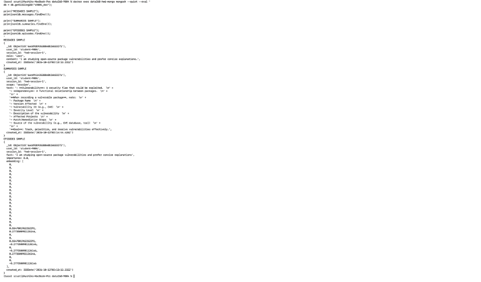

Name: Shrusti Shetty
SID4: 9004
Repository: https://github.com/shrustishetty-2401/data260-9004
Collaborators: Sbnikitha and supriyaselvanganesan
s9004qwen3:8bhw65837797212049e93a73eb53ca23aaa2a5e3272fcThe MongoDB database is s9004_doc, created with MongoDB
7 and PyMongo. The main collection is vulnerabilities.
The API schema includes:
title with a maximum length of 100
characters.description.severity.discovered_at.created_at and updated_at
timestamps.low, medium,
high, and critical.open, triaged, and
resolved.open.API-level validation is implemented with Pydantic models.
class VulnerabilityCreate(BaseModel):
title: str = Field(min_length=1, max_length=100)
description: str | None = None
severity: Severity
status: VulnerabilityStatus = VulnerabilityStatus.OPEN
discovered_at: datetimeImplemented endpoints:
POST /api/documentsGET /api/documentsGET /api/documents/{id}PUT /api/documents/{id}DELETE /api/documents/{id}The endpoint implementation converts string IDs into MongoDB
ObjectId values, returns HTTP 404 for missing records,
updates updated_at, and returns HTTP 204 after successful
deletion.
@router.get("", response_model=list[VulnerabilityResponse])
def get_all_documents():
documents = vulnerabilities_collection.find().sort(
"created_at",
-1,
)
return [
serialize_document(document)
for document in documents
]
@router.put(
"/{document_id}",
response_model=VulnerabilityResponse,
)
def update_document(
document_id: str,
payload: VulnerabilityUpdate,
):
object_id = get_object_id(document_id)
changes = payload.model_dump(exclude_unset=True)
changes["updated_at"] = utc_now()
result = vulnerabilities_collection.update_one(
{"_id": object_id},
{"$set": changes},
)
if result.matched_count == 0:
raise HTTPException(
status_code=404,
detail="Document not found",
)
return serialize_document(
vulnerabilities_collection.find_one(
{"_id": object_id}
)
)
@router.delete(
"/{document_id}",
status_code=204,
)
def delete_document(document_id: str):
result = vulnerabilities_collection.delete_one(
{"_id": get_object_id(document_id)}
)
if result.deleted_count == 0:
raise HTTPException(
status_code=404,
detail="Document not found",
)
return Response(status_code=204)CORS middleware allows the existing frontend origins, including
localhost:5173 and localhost:9191. The backend
is organized into separate files for API configuration, MongoDB
connection management, Pydantic schemas, and route handlers.
Validation tests confirmed:

The memory system uses these MongoDB collections:
messagessummariesepisodesThe /api/chat endpoint:
qwen3:8b model.{ “reply”: “The assistant response…”, “memory_used”: { “short_term_count”: 12, “short_term_messages”: [ { “role”: “user”, “content”: “Previous question…” }, { “role”: “assistant”, “content”: “Previous answer…” } ], “long_term_summary”: “Session summary text…”, “lifetime_summary”: “Lifetime summary text…”, “episodic_facts”: [ { “fact”: “The user prefers concise explanations”, “importance”: 0.8, “similarity”: 0.74 } ] }, “metrics”: { “prompt_tokens”: 614, “completion_tokens”: 50, “total_tokens”: 664, “latency_ms”: 9255.64, “summary_created”: false } }
The response exposes both the generated reply and the memory actually used for that turn, including the short-term window, summaries, and retrieved episodic facts.
Configuration values:
SHORT_TERM_N=12EPISODE_TOP_K=3SUMMARIZE_EVERY_USER_MSGS=3The prompt combines the system primer, lifetime summary, session summary, episodic facts, recent short-term messages, and the current user question.
context_parts = [SYSTEM_PRIMER]
if lifetime_summary:
context_parts.append(
f"Lifetime summary:\n"
f"{lifetime_summary['text']}"
)
if session_summary:
context_parts.append(
f"Session summary:\n"
f"{session_summary['text']}"
)
if episodes:
facts = "\n".join(
f"- {episode['fact']}"
for episode in episodes
)
context_parts.append(
f"Episodic facts:\n{facts}"
)
prompt_messages = [
{
"role": "system",
"content": "\n\n".join(context_parts),
}
]Facts and episodic retrieval are implemented as follows:
def extract_facts(message: str) -> list[str]:
parts = [
part.strip()
for part in re.split(
r"[.!?]+",
message,
)
if part.strip()
]
facts = []
for part in parts[:3]:
fact = part[:240]
if fact and fact not in facts:
facts.append(fact)
return facts
def get_relevant_episodes(
user_id: str,
message: str,
) -> list[dict]:
query_embedding = embed_text(message)
candidates = list(
episodes_collection.find(
{"user_id": user_id}
)
)
for episode in candidates:
episode["similarity"] = round(
cosine_similarity(
query_embedding,
episode.get("embedding", []),
),
4,
)
candidates.sort(
key=lambda item: (
item.get("similarity", 0),
item.get("importance", 0),
),
reverse=True,
)
return candidates[:EPISODE_TOP_K]Summarization is triggered every three user messages:
if (
user_message_count
% SUMMARIZE_EVERY_USER_MSGS
== 0
):
summarize_session(
payload.user_id,
payload.session_id,
)
summarize_lifetime(
payload.user_id,
)
summary_created = Truedef embed_text( text: str, dimensions: int = 32, ) -> list[float]: vector = [0.0] * dimensions
for word in re.findall(
r"[a-zA-Z0-9']+",
text.lower(),
):
digest = hashlib.sha256(
word.encode("utf-8")
).digest()
index = int.from_bytes(
digest[:4],
"big",
) % dimensions
vector[index] += (
1.0 if digest[4] % 2 == 0 else -1.0
)
magnitude = math.sqrt(
sum(value * value for value in vector)
)
return (
vector
if magnitude == 0
else [value / magnitude for value in vector]
)importance = ( 0.8 if any( word in fact.lower() for word in [ “my”, “i am”, “i’m”, “always”, “never”, “prefer”, ] ) else 0.5 )
@router.post(“/api/chat”) def chat_endpoint(payload: ChatRequest): messages_collection.insert_one({ “user_id”: payload.user_id, “session_id”: payload.session_id, “role”: “user”, “content”: payload.message, “created_at”: utc_now(), })
store_episodes(
payload.user_id,
payload.session_id,
payload.message,
)
prompt_messages, used = build_prompt(
payload.user_id,
payload.session_id,
payload.message,
)
result = complete(prompt_messages)
messages = list(
messages_collection.find({"user_id": user_id})
.sort("created_at", -1)
.limit(16))
episodes = list( episodes_collection.find({“user_id”: user_id}) .sort(“created_at”, -1) .limit(20) ) The embedding function creates deterministic 32-dimensional vectors. Importance is assigned as 0.8 for preference or personal facts and 0.5 for ordinary facts. The memory endpoint limits its response to 16 messages and 20 episodic facts.
A ten-message conversation was completed successfully. The memory response contained messages, session summaries, lifetime summaries, episodic facts, embeddings, and JSON-safe string IDs.
@router.get("/api/memory/{user_id}")
def get_memory(user_id: str):
return make_json_safe({
"messages": messages,
"latest_session_summary": session_summary,
"latest_lifetime_summary": lifetime_summary,
"episodic_facts": episodes,
})
@router.get("/api/aggregate/{user_id}")
def get_aggregate(user_id: str):
return make_json_safe({
"daily_message_counts": daily_counts,
"recent_summaries": recent_summaries,
})The memory endpoint returns recent messages, summaries, and episodic
facts. The aggregate endpoint returns daily message counts and recent
summaries. The local qwen3:8b model is called through the
existing HW1 model adapter in src/model_client.py. The API
also catches database errors and returns HTTP 500 with a clear error
message when a server-side database failure occurs.



The MongoDB evidence shows stored documents in the
messages, summaries, and episodes
collections.
Each experiment used a fresh user and session with a 30-message conversation followed by five memory probes.
| Setting | Mean prompt tokens/turn | Mean latency (ms) | Probe quality |
|---|---|---|---|
SHORT_TERM_N=4 |
286.97 | 5000.13 | 3.0 |
SHORT_TERM_N=12 |
614.17 | 9255.64 | 2.8 |
SHORT_TERM_N=30 |
1020.77 | 12746.58 | 2.8 |
Eviction policy, N=12 |
685.40 | 10635.50 | 3.0 |
The component estimates do not equal the complete model prompt because they exclude the current user message, role labels, message formatting, and other prompt serialization overhead. In the recorded example, the listed components total 1,456 estimated tokens, while the Ollama prompt total is 2,209 tokens; the remaining 753 tokens come from the current message, conversation formatting, role markers, and model prompt overhead.
The eviction run used 685.40 mean prompt tokens compared with 614.17 for baseline N=12, an increase of 71.23 tokens per turn, or approximately 11.6%. Therefore, this single run did not demonstrate token savings. The policy demonstrated bounded episodic-memory storage instead.
The eviction policy limits stored episodic facts to the most recent
ten facts per user. This bounds database growth. It did not reduce
prompt cost in this single run because retrieval already limits the
prompt to EPISODE_TOP_K=3 episodic facts.
Per-request metrics include component-level estimates:
{
"prompt_tokens": 2209,
"completion_tokens": 262,
"total_tokens": 2471,
"system_primer_tokens": 26,
"long_term_summary_tokens": 257,
"short_term_window_tokens": 1146,
"episodic_facts_tokens": 27,
"latency_ms": 33194.29
}Probe questions and keyword-based scoring were recorded in
memory_probes.yaml.
- id: preference
question: How does the user prefer explanations?
expected: [concise, open-source]
- id: recording
question: What should be recorded for a vulnerable package?
expected: [package, severity, version]
- id: severity
question: Which severity levels should be prioritized first?
expected: [critical, high]f
- id: transitive
question: Why are transitive dependencies important?
expected: [indirect, vulnerabilities]
- id: no_patch
question: What should be done when no patch exists?
expected: [replace, workaround]The probe score used a 1–5 scale based on the number of expected keywords found in the response.
Estimated costs for 10,000 thirty-turn conversations were calculated using:
$1.00 / 1,000,000 tokens$5.00 / 1,000,000 tokens| Setting | Mean completion tokens/turn | Estimated cost |
|---|---|---|
SHORT_TERM_N=4 |
37.93 | $142.99 |
SHORT_TERM_N=12 |
50.13 | $259.45 |
SHORT_TERM_N=30 |
44.20 | $372.53 |
Eviction policy, N=12 |
57.03 | $291.17 |
rubric: 1: The response is incorrect or does not answer the question. 2: The response gives a weak or mostly incomplete answer. 3: The response answers the question generally and includes at least one expected concept. 4: The response is correct and includes most expected concepts. 5: The response is complete, accurate, and includes all important expected concepts.
The keyword matches provided an automatic baseline score, and the 1–5 rubric was used to interpret response quality.
SHORT_TERM_N=4 had the lowest prompt-token usage,
latency, and estimated cost while maintaining a probe score of 3.0.
SHORT_TERM_N=30 had the highest prompt-token usage,
latency, and estimated cost. Its probe score was 2.8, which did not
improve over the smaller windows. This was a single run with a small
probe set, so the difference may include model and run-to-run
variation.
The eviction policy did not reduce cost compared with baseline
N=12 in this run. Its purpose was bounded episodic-memory
growth.
The experiment results were saved as JSON under
reports/hw06/raw/.
SHORT_TERM_N=4 mean_prompt=286.97 latency=5000.13 ms quality=3.0
SHORT_TERM_N=12 mean_prompt=614.17 latency=9255.64 ms quality=2.8
SHORT_TERM_N=30 mean_prompt=1020.77 latency=12746.58 ms quality=2.8
EVICTION_N=12 mean_prompt=685.40 latency=10635.50 ms quality=3.0
## Part 4 - File-Based Memory
`AGENT.md` contains:
- Project description.
- Technology stack.
- Coding conventions.
- Testing approach.
- Prohibited actions.
- Code review formatting requirements.
`MEMORY.md` was initially created with duplicate and contradictory facts. The original file had 55 physical lines. The consolidation process created `reports/hw06/MEMORY_original.md`, resolved duplicate facts, recorded explicit contradiction decisions, and reduced the consolidated `MEMORY.md` to 38 physical lines, below the required 40-line limit.
The terminal evidence also showed a first run of 54 to 34 because that command counted non-empty memory facts rather than physical file lines. A later 34 to 35 result occurred because the consolidation timestamp and headings were rewritten; the final physical-line check is the authoritative 38-line result.
The three contradictions were handled explicitly:
1. Concise versus detailed explanations:
- Retained concise explanations because that is the current project preference.
- Marked detailed explanations as superseded.
- Verification is required if the preference changes.
2. Open versus resolved package status:
- Retained resolved as the operational status.
- Marked the decision as potentially incorrect because the original facts had no timestamps.
- Verification against the current package record is required.
3. MongoDB versus MySQL memory:
- Retained MongoDB for HW6 memory.
- Marked MySQL as incorrect for HW6, while recognizing that MySQL remains part of the earlier SQL application.
The file-memory prompt loads both project instructions and durable memory:
```python
def build_file_memory_prompt() -> str:
return (
f"Project instructions:\n"
f"{load_agent()}\n\n"
f"Durable memory:\n"
f"{load_memory()}"
)The consolidation rule checks both the line count and the timestamp:
def consolidation_required() -> bool:
lines_exceed_limit = (
len(non_empty_memory_lines()) > 40
)
timestamp = get_consolidation_timestamp()
older_than_one_day = (
timestamp is None
or datetime.now(timezone.utc) - timestamp
> timedelta(hours=24)
)
return (
lines_exceed_limit
or older_than_one_day
)The required commands are:
/memory/compact/dream/helpdef memory_command(
command: str,
recent_conversation: str = "",
) -> dict:
if command == "/memory":
return {
"command": command,
"memory": load_memory(),
}
if command == "/compact":
result = consolidate_memory()
return {
"command": command,
"details": result,
}
if command == "/dream":
facts = [
line.strip()
for line in recent_conversation.splitlines()
if line.strip()
]
with MEMORY_PATH.open(
"a",
encoding="utf-8",
) as file:
for fact in facts[:3]:
file.write(f"- {fact}\n")
return {
"command": command,
"added_facts": facts[:3],
}
if command == "/help":
return {
"command": command,
"commands": {
"/memory": "Display file-based memory.",
"/compact": "Consolidate MEMORY.md.",
"/dream": "Save useful recent facts.",
"/help": "Display available commands.",
},
}The type-hinted file-memory functions use UTC timestamps and were
verified against the project instructions in AGENT.md.


| Criterion | MongoDB-backed memory | File-based memory |
|---|---|---|
| Inspectability | Structured collections with timestamps, embeddings, and summaries. | Directly readable Markdown files. |
| Persistence after restart | Persists in MongoDB across API restarts. | Persists in AGENT.md and MEMORY.md. |
| Scalability | Better for many users and sessions. | Less scalable as one file grows. |
| Retrieval | Supports queryable messages, summaries, and episodic facts. | Best for durable instructions and verified facts. |
| Facts that must not be forgotten | Lifetime summaries and episodic records. | Stable instructions and manually verified facts. |
MongoDB memory is better for conversational history, retrieval, and multiple sessions. File-based memory is better for stable instructions and durable facts that should remain visible and inspectable.
The HW6 verification script passed all checks:
POST /api/chat.The complete verification output was:
{
"homework": "HW6",
"sid4": 9004,
"commit_hash": "ab68f1e782b70c1875b5096e37c28be6bb80b39c",
"model": "qwen3:8b",
"configuration": {
"PORT_BASE": 8004,
"PREFIX": "s9004",
"DOMAIN_ID": 4
},
"SEED": 9004,
"VERIFY_SEED": 269004,
"timestamp": "2026-10-13T23:18:44.619347+00:00",
"checks": [
{
"name": "FastAPI health endpoint",
"passed": true
},
{
"name": "POST /api/chat endpoint",
"passed": true
},
{
"name": "MongoDB document list endpoint",
"passed": true
},
{
"name": "MongoDB document create endpoint",
"passed": true
},
{
"name": "MongoDB document delete endpoint",
"passed": true
},
{
"name": "Memory endpoint",
"passed": true
},
{
"name": "Aggregate endpoint",
"passed": true
}
],
"passed": true
}The verification output is stored in
reports/hw06/verification.json.
See AI_USE.md.
AI assistance helped plan the implementation, write FastAPI and PyMongo code, design memory retrieval and summarization logic, prepare experiment scripts, and organize the report.
One unsuitable result was the initial memory endpoint response. It
failed because MongoDB ObjectId values were not JSON
serializable. I detected the issue by calling
GET /api/memory/student-9004 and reviewing the FastAPI
traceback.
I fixed the issue by adding a recursive make_json_safe
function that converts ObjectId values to strings before
returning API responses. I then recompiled the code and verified that
the memory and aggregate endpoints returned valid JSON.
I personally completed the database setup, configured MongoDB and Ollama, created screenshots and raw experiment evidence, ran endpoint tests, reviewed outputs, resolved memory contradictions, and made the final submission decisions.
The generated file-memory function was checked against the
AGENT.md requirements for type hints, UTC timestamps, file
persistence, the 40-line consolidation rule, contradiction handling, and
the required memory commands.
The following reproducible evidence files are included:
raw/chat_metrics.jsonlraw/experiment_short_term_4.jsonraw/experiment_short_term_12.jsonraw/experiment_short_term_30.jsonraw/experiment_eviction_12.jsonraw/memory_student-9004.jsonraw/aggregate_student-9004.jsonraw/memory_hw6-evidence-user.jsonraw/aggregate_hw6-evidence-user.jsonraw/memory_lifetime-test.jsonmemory_probes.yamlverification.jsonRUN_LOG.txtMETRICS.mdAI_USE.md